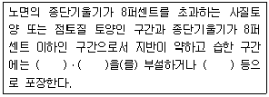

산림산업기사 (2011-06-12 기출문제)
1과목: 조림학
1. 제벌작업에 대하여 가장 올바르게 설명하고 있는 것은?
- 산림보육 순서로 보면 간벌작업 후에 실시하는 작업이다.
- 중간 벌채 수입을 목적으로 하지 않는다.
- 농한기인 겨울철에 실시하는 것이 좋다.
- 제벌 횟수는 어느 수종이나 1회 실시하는 것으로 충분하다.
(정답률: 87%)

2. 다음 중에서 임업묘포의 입지로 적절한 지역은?
- 산간의 계곡으로 사방이 막혀서 바람이 없는 곳
- 동남향으로 약 1~5° 의 완경사지
- 동남쪽에 방풍림이 조성된 평탄지
- 점토질 토양으로 이루어진 논토양 지역
(정답률: 85%)
3. 다음 중 토양의 화학적 풍화작용에 해당되지 않는 것은?
- 수화작용
- 산화작용
- 포드졸화작용
- 탄산염화작용
(정답률: 46%)
4. 다음 중 파종조림이 가장 곤란한 수종은?
- 소나무, 곰솔, 리기다소나무
- 밤나무, 상수리나무, 떡갈나무
- 가래나무, 굴참나무, 졸참나무
- 일본잎갈나무, 전나무, 단풍나무류
(정답률: 63%)
5. 발아시험에 있어서 일정한 기간 내에 발아하는 종자입수의 %로 표현한 것은?
- 발아율
- 발아력
- 발아세
- 효율
(정답률: 75%)
6. 묘포장에서 일반적인 제초제의 사용방법에 해당하지 않는 것은?
- 토양처리법
- 훈증법
- 잡초처리법
- 잡초 및 토양처리법
(정답률: 87%)
7. 다음 중 양수인 침엽수는?
- 가문비나무
- 너도밤나무
- 주목
- 측백나무
(정답률: 68%)
8. 종자의 발아율 조사를 위해서 테트라졸륨 수용액에종자를 넣으면 활력이 있는 부위의 색깔은?
- 푸른색
- 붉은색
- 검정색
- 변하지 않는다.
(정답률: 100%)
9. 광합성 작용을 설명한 내용 중 맞는 것은?
- 광반응은 엽록체의 스트로마 부분에서 일어난다.
- 암반응에서는 ATP가 생성된다.
- 광반응은 햇빛이 있을 때 NADPH를 만들고 ATP를 생산한다.
- 광반응을 켈빈사이클(calvin cycle)이라고도 한다.
(정답률: 73%)
10. 산림작업종(갱신)에서 교림작업법의 범주에 속하지 않는 것은 다음 중 어느 것인가?
- 개벌갱신에 의한 작업종
- 산벌갱신에 의한 작업종
- 가지치기에 의한 작업종
- 택벌갱신에 의한 작업종
(정답률: 76%)
11. 일반적으로 대부분의 침엽수와 참나무류, 피나무, 느릅나무 등의 여러 가지 활엽수 생육에 양호한 조건을 제공하는 토양산도의 범위는?
- pH 3 ~ 4
- pH 3.5 ~ 4.5
- pH 5.5 ~ 6.5
- pH 7.5 ~ 8.5
(정답률: 80%)
12. 다음 수종 가운데 자유생장을 하는 수종이 아닌 것은?
- 포플러
- 은행나무
- 낙엽송
- 가문비나무
(정답률: 48%)
13. 보통 소나무와 낙영송의 첫 번째 제벌을 시작하는 임령과, 나무의 고사상태를 알고 맹아력을 감소시키기 위한 제벌시기로 맞게 짝지어진 것은?
- 2 ~ 6년, 봄
- 2 ~ 6년, 겨울
- 7 ~ 8년, 여름
- 10 ~ 15년, 가을
(정답률: 88%)
14. 묘목의 위(새잎)에서부터 점점 아래로 황백색으로 될 때 결핍된 원소는?
- N
- Mg
- Fe
- P
(정답률: 53%)
15. 종자의 품질을 나타내는 순량율은 종자의 무엇을 기준으로 한 것인가?
- 무게
- 수량
- 부피
- 크기
(정답률: 92%)
16. EBERHARD가 제창한 선형산벌작업의 특징은?
- 우량 대재목이 생산된다.
- 직경생장이 촉진된다.
- 갱신이 속히 된다.
- 풍해에 대해 안전하다.
(정답률: 60%)
17. 식재밀도 조절문제는 수종, 묘령, 입지조건, 경제사정, 경영목표 등에 따라 다를 수 있다. 밀식의 장점이 아닌 것은?
- 표토의 침식과 건조를 방지하여 개벌에 의한 지력의 감퇴를 줄임
- 가지가 가늘게 되어 임목의 형질을 높여 가지치기의 비용을 줄임
- 개체간의 경쟁으로 연륜폭이 균일하게 되어 고급재를 생산
- 하예기간을 늘여줌
(정답률: 71%)
18. 묘목간의 간격을 2m로 하고 정방형으로 조림하고자 할 때 1ha에 몇 본이 소요되는가?
- 2000본
- 2500본
- 3000본
- 3500본
(정답률: 88%)
19. 묘목의 곤포란?
- 굴취한 묘목을 규격에 따라 나누는 일
- 묘목을 식재지까지 운반하기 위해 알맞은 크기로 다발묶음하여 포장하는 일
- 포지에서 양성된 묘목을 식재될 산지까지 수송하는 일
- 묘목을 심기 전 일시적으로 도랑을 파서 그 안에 뿌리를 묻어 건조를 방지하고 생기를 회복시키는 일
(정답률: 92%)
20. 유림에 대한 무육작업으로 적합한 것은?
- 간벌과 가지치기
- 가지치기와 덩굴치기
- 풀베기와 덩굴치기
- 풀베기와 간벌
(정답률: 75%)
2과목: 산림보호학
21. 솔껍질깍지벌레의 생태적 특성 가운데 틀린 것은?
- 년1회 발생하며 후약충으로 월동한다.
- 부화약충의 발생시기는 7월이다.
- 수컷은 완전변태를 하며 암컷은 불완전변태를 한다.
- 암컷은 알주머니를 형성한 후 산란한다.
(정답률: 47%)
22. 솔잎혹파리의 방제법 중 합당하지 않은 것은?
- 밀생 임분은 간벌, 불량치수 및 피압목을 제거하여 임내를 건조시킨다.
- 포스파미돈 액제(50%)를 줄기에 주입한다.
- 나무에 볏짚을 감아 월동 유충을 구제한다.
- 침투성 약제 나무주사가 가장 효율적인 방제법이다.
(정답률: 67%)
23. 미국흰불나방이 월동하는 형태는?
- 알
- 유충
- 번데기
- 성충
(정답률: 87%)
24. 다음 중 밤나무혹벌의 생태적 특성 가운데 올바른 것은?
- 연 2회 발생한다.
- 성충으로 월동한다.
- 산란수는 200~300개이다.
- 양성생식종이다.
(정답률: 55%)
25. 다음 병원의 종류 중 바이러스에 의한 수목병에 속하는 것은?
- 포플러 모자이크병
- 밤나무 눈마름병
- 밤나무 잉크병
- 소나무 잎녹병
(정답률: 87%)
26. 오동나무 빗자루병의 매개충은 무엇인가?
- 복숭아혹진딧물
- 마름무늬매미충
- 담배장님노린재
- 솔잎혹파리
(정답률: 79%)
27. 유아등으로 잡을 수 없는 해충은?
- 솔잎혹파리
- 미국흰불나방
- 독나방
- 솔나방
(정답률: 74%)
28. 개간 직후의 미분해 유기물이 많은 임지에서 발병하기 쉬운 병은?
- 모잘록병
- 근두암종병
- 줄기마름병
- 자줏빛날개무늬병
(정답률: 57%)
29. 다음은 산림이 받는 피해를 원인별로 나눈 것이다. 이 중 연해는 주로 어느 것에 속하는가?
- 인위적 피해
- 기상에 의한 피해
- 병균에 의한 피해
- 곤충에 의한 피해
(정답률: 69%)
30. 다음 중 훈증제는 어느 것인가?
- 클로로피크린
- 제충국제
- 벤졸
- TEPP
(정답률: 66%)
31. 지표화로부터 연소되는 경우가 많고, 나무의 공동부가 굴뚝과 같은 작용을 하여 비화가 발생하기 쉬운 산불의 종류는?
- 수관화
- 수간화
- 지표화
- 지중화
(정답률: 82%)
32. 소나무 줄기에 상처를 냈을 때 송진의 유출상태로 나무의 건강 상태를 진단하였다. 다음 중 이상이 없는 상태는?
- 송진이 전혀 나오지 않는다.
- 송진이 약간 비친다.
- 송진이 부분적으로 스며 나온다.
- 송진이 많이 흐른다.
(정답률: 54%)
33. 다음 중 솔잎혹파리의 방제를 위하여 기생적천적을 이식할 때 활용하는 생물은?
- 솔잎벌
- 노란꼬리좀벌
- 혹파리살이먹좀벌
- 송충알벌
(정답률: 75%)
34. 대추나무 빗자루병 방제에 가장 효과적인 약제는?
- 페니실린
- 보르도액
- 석회황합제
- 옥시데트라사이클린
(정답률: 90%)
35. 진균의 영양기관으로서 기주식물의 세포내에 형성하여 영양을 섭취하는 기관의 명칭은?
- 포자
- 분생자병
- 포자각
- 흡기
(정답률: 60%)
36. 산림해충의 방제방법 중 임업적방제법에 속하지 않는 것은?
- 간벌 및 하예
- 내충성 수종의 육종
- 검역
- 혼효림의 조성
(정답률: 88%)
37. 다음 중 솔나방 방제를 위하여 1000배액으로 희석하여 수관살포 하는 MEP(fenitrothion) 50% 유제는 살충기작에 의한 분류 시 어디에 해당하는가?
- 접촉제 및 소화중독제
- 침투성 상충제
- 기피제
- 불임제
(정답률: 63%)
38. 녹병균은 이종기생을 한다. 다음 중 포플러 잎녹병의 기주 교대 수종은?
- 소나무
- 배나무
- 낙엽송
- 잣나무
(정답률: 74%)
39. 다음 중 1년에 2회 발생하는 해충은?
- 솔나방
- 독나방
- 미국흰불나방
- 어스렝이나방
(정답률: 91%)
40. 야생동물군집 형성을 위한 임분 관리방법에 해당되지 않는 것은?
- 택벌
- 임간 숲 틈 조성
- 혼효림의 복층림화
- 순림위주의 산림 관리
(정답률: 83%)
3과목: 임업경영학
41. 다음 중 수고 측정 기구가 아닌 것은?
- 미국 임야청측고기
- 아브네이레블
- 빌티모아스티크
- 순또 측고기
(정답률: 81%)
42. 다음 중 보속 작업의 이점이 아닌 것은?
- 해마다 수확하므로 기계 운용에 좋다.
- 임산물을 판매하는데 편리하다.
- 벌채면적이 커서 갱신, 국토보전 유지에 도움이 된다.
- 지역주민에게 안정된 노동기회를 준다.
(정답률: 78%)
43. 지종구분이 아닌 것은 어느 것인가?
- 시업지
- 시업제한지
- 제지
- 작업종
(정답률: 72%)
44. 일반적으로 적용하는 침엽수의 조재율은?
- 0.1 ~ 0.2
- 0.3 ~ 0.4
- 0.4 ~ 0.6
- 0.7 ~ 0.9
(정답률: 73%)
45. 임목의 평가방법이 아닌 것은?
- 비용가법
- 수익환원법
- Glaser법
- 절충법
(정답률: 71%)
46. 말구직경 24cm, 중앙직경 28cm, 원구직경 34cm, 재장이 4m인 통나무의 재적을 Newton식(또는 Riecke 식)으로 계산하면 약 몇 m3인가? (단, π는 3.141을 적용한다.)
- 0.246m3
- 0.255m3
- 0.272m3
- 0.295m3
(정답률: 50%)
47. 다음 중 임지기망가의 인자에 대한 설명으로 틀린 것은?
- 적용하는 이율 P의 값이 클수록 임지기망가의 최대값이 되는 시기가 빨리 온다.
- 간벌수익이 클수록 임지기망가의 최대값이 되는 시기가 빨리 온다.
- 조림비가 클수록 임지기망가가 최대가 되는 시기가 빨리 온다.
- 관리비는 임지기망가가 최대로 되는 시기와는 관계가 없다.
(정답률: 51%)
48. 육림비의 구성 중에서 가장 큰 비중을 차지하는 것은?
- 지대
- 물재비
- 이자
- 노동비
(정답률: 80%)
49. 우리나라 전국 산림의 영급구조 중 가장 많은 면적을 차지하는 영급은? (단, 2009년 말을 기준으로 한다.)
- Ⅱ영급
- Ⅲ영급
- Ⅴ영급
- Ⅵ영급
(정답률: 54%)
50. 각 생산요소에 귀속하는 임업소득의 계산방법으로 틀린 것은?
- 임지에 귀속하는 소득 = 임업소득 - (자본이자 + 가족노임추정액)
- 자본에 귀속하는 소득 = 임업소득 - (지대 + 가족노임추정액)
- 가족노동에 귀속하는 소득 = 임업조소득 - (지대 + 자본이자)
- 경영관리에 귀속하는 소득(기업자의 이윤) = 임업순수익 - (지대 + 자본이자)
(정답률: 56%)
51. 임지가망가에 대한 다음의 설명 중 틀린 것은?
- 해당 임지에서 장래 기대되는 순수익의 현재가 합계로 정한 가격이다.
- 무한정기 이자식을 적용하여 계산한다.
- 장기적인 관점에서 임지에 동일한 작업법을 적용하지 않아도 사용할 수 있다.
- 임지기망가가 최대가 되는 시점은 일반적으로 토지순수익설에 의해 최적의 윤벌기로 결정되기 때문에 경영의 기준자료로 사용된다.
(정답률: 54%)
52. Huber식에 의해 벌채목의 재적을 계산하는 옳은 식은? (단, V = 벌채목 재적(m3), go = 원구단면적(m2), gm = 중앙단면적(m2), gn = 말구단면적(m2), L = 재장(m)이다.)
- V = gnㆍL
- V = gmㆍL
- V = {(go +gn) / 2}ㆍL
- V = {(go +4gm + gn) / 6}ㆍL
(정답률: 80%)
53. 매년 목재수확을 양적으로나 질적으로 균등하게 추구하는 지도원칙은?
- 보속성 원칙
- 합자연성 원칙
- 공공성 원칙
- 생산성 원칙
(정답률: 84%)
54. 앞으로 10년 후에 300,000원의 간벌수익을 얻으리라고 예상하면 벌기 40년인 간벌수입의 전가합계는 얼마인가? (단, 이율은 5%이며, 1.⑤30 = 4.32, 1.⑤10 = 1.63, 1/1.⑤30 = 0.23, 1/1.⑤10 = 0.61)
- 69,000원
- 183,000원
- 1,296,000원
- 489,000원
(정답률: 26%)
55. 보속작업에서 한 작업급에 속하는 모든 임분을 일순벌하는데 요하는 기간은?
- 갱정기
- 윤벌기
- 회귀년
- 정리기
(정답률: 78%)
56. 각자의 산림면적이 적고 산주수가 대단히 많으므로 몇 사람씩 하나로 합쳐서 산림을 경영하도록 하는 공동 산림경영(협업경영)을 권장하는 바람직한 경영형태는?
- 겸업적 임업
- 주업적 임업
- 농가 임업
- 부업적 임업
(정답률: 65%)
57. 임업경영과 관련된 다음 내용 중 틀린 것은?
- 자본주의 국가에서 국가나 공공단체가 직접 산림을 가지고 임업을 경영하는 주요한 이유는 국토의 보존만을 위해서이다.
- 공익의 제고를 위해서는 일정한 면적의 국ㆍ공유림의 경영, 관리가 필요하다.
- 산림에서는 목재생산만 하는 것이 아니고 토사유출방지 등의 공공이익도 크다.
- 산림내 동ㆍ식물의 보존은 공공적 이익목적이 크기 때문이라고 할 수 있다.
(정답률: 88%)
58. 현재 50년생인 임분의 ha 당 재적은 100m3이고, 10년 전인 40년생에서는 86m3 로 파악되었다. 이 임분의 지난 10년간의 정기평균성장량(periodic annual increment)은?
- 2 m3
- 20 m3
- 1.4 m3
- 14 m3
(정답률: 73%)
59. 임업경영의 성과를 나타내는 가장 정확한 지표는?
- 임업조수익
- 임업소득
- 임업 현금수입
- 임업총수입
(정답률: 79%)
60. 다음 중 산림경영계획 수립을 위한 산림조사의 임황조사 항목이 아닌 것은?
- 임종
- 축적
- 소밀도
- 지위
(정답률: 58%)
4과목: 산림공학
61. 야계사방에 있어서 유량을 결정하는 요인이 아닌 것은?
- 야계의 유역면적 및 임상
- 지형ㆍ지질 및 배수조직
- 강수량ㆍ강수분포 및 강우강도
- 계상물매 및 만곡부의 처리
(정답률: 54%)
62. 기계력에 의한 집재방법 중 트랙터집재기와 야더집재기의 집재를 비교한 트랙터 집재의 특징에 대한 설명으로 틀린 것은?
- 기동성이 크므로 어느 정도의 도로가 있으면 실행된다.
- 면으로부터 선으로 확대하여 집재작업이 된다.
- 견인력이 크므로 한번에 다량의 목재를 반출할 수 있다.
- 저속이므로 장거리운반에는 바람직하지 못한다.
(정답률: 67%)
63. 임도의 배수시설의 하나인 세월공작물에 관한 설명으로 옳은 것은?
- 평상시는 관거 등을 통해 배수하고 홍수시는 월류할 수 있게 한다.
- 계상물매가 완만한 계류통과부에 설치한다.
- 유로에 해당되는 부분은 사다리꼴의 단면으로 한다.
- 하류부가 황폐계류인 경우에 설치하는 것이 효과적이다.
(정답률: 78%)
64. 사리도에 대한 설명으로 틀린 것은?
- 자갈을 노면에 깔고 교통에 의한 자연전압으로 노면을 만든 것이다.
- 노반의 시공방법은 크게 상치식과 상굴식으로 구분할 수 있다.
- 하층일수록 잔자갈을, 표층에 가까울수록 굵은 자갈을 부설하는 것이 좋다.
- 결합재로는 점토나 세점토사 등이 이용되며, 결합재의 적정량은 자갈 무게의 10 ~ 15% 가 알맞다.
(정답률: 72%)
65. 일반적으로 흙쌓기는 시공 후 시일이 경과하면 수축하여 용적이 감소하므로 더쌓기를 실시해야 하는데 일반적인 더쌓기는 흙쌓기 높이의 몇 % 정도인가?
- 0~5 %
- 5~10 %
- 10~15 %
- 15~20 %
(정답률: 81%)
66. 산림관리기반시설의 설계 및 시설기준에서 임도실시설계의 현지측량에 속하지 않는 것은?
- 현황측량
- 중심선측량
- 횡단측량
- 종단측량
(정답률: 69%)
67. 다음 침식의 형태 중 성질이 다른 하나는?
- 빗물(우수)침식
- 하천침식
- 지중침식
- 유동형침식
(정답률: 64%)
68. 바닥막이 높이를 결정할 때 유의해야 할 사항 중 부적합한 항목은?
- 계상의 종침식을 방지하는 경우에는 높은 바닥막이를 계획한다.
- 붕괴지의 하부에 붕괴의 원인이 되는 산각의 침식을 방지하기 위하여 설치하는 경우에는 산각을 보호할 수 있는 높은 바닥막이를 계획한다.
- 계상 상의 사력이동을 방지하기 위하여 설치하는 경우에는 현재 계상의 높이를 유지할 정도로 높이로 한다.
- 공작물 기초의 세굴을 방지하기 위하여 시공하는 경우에는 그 기초를 보호할 수 있는 정도의 높이로 한다.
(정답률: 40%)
69. 사방공작물 중에 수제의 기능이라고 볼 수 없는 것은?
- 세굴 방지
- 수류 유도
- 토사퇴적
- 물매 안정
(정답률: 35%)
70. 수평거리 100에 대하여 n 이 수직거리를 나타낼 때 임도의 종단물매로 표시하려고 할 때 가장 적합한 것은?
- n/1 %
- n/10 %
- n/100 %
- n/1000 %
(정답률: 52%)
71. 등산로 이용자의 편의도모 및 환경훼손적인 이용형태를 규제하기 위해서 고려해야 하는 사항이 아닌 것은?
- 경사도에 따라 다양한 바닥시설을 한다.
- 통행량에 따라 등산로 폭을 다양하게 조정한다.
- 이용규제를 위하여 다양한 경계울타리를 설치한다.
- 자연발생적 등산로는 먼저 식생을 복원하고 지형을 복구한다.
(정답률: 68%)
72. 다음은 산림관리기반시설의 설계 및 시설기준에 대한 설명이다. ( )안에 들어갈 용어가 아닌 것은?

- 쇄석
- 자갈
- 콘크리트
- 원목
(정답률: 74%)
73. 지형에 따른 임도의 설계속도를 올바르게 설명한 것은?
- 평지보다 산지의 설계속도를 높게 한다.
- 장거리보다 단거리 임도의 설계속도를 높게 한다.
- 대피소간의 왕복거리와 교통량으로 산출한다.
- 교통량이 많은 노선보다 적은 노선의 설계속도를 높게 한다.
(정답률: 54%)
74. 집재작업을 위한 플라스틱 수라의 최소물매는 몇 % 정도가 되도록 설치하는 것이 적합한가?
- 10~15 %
- 15~25 %
- 30~40 %
- 40~50 %
(정답률: 58%)
75. 적정임도밀도가 40m/ha 인 임도가 있다. 이 임도의 평균집재거리는 몇 m인가?
- 60 m
- 62.5 m
- 65 m
- 67.5 m
(정답률: 65%)
76. 사방댐의 위치 결정시 고려할 사항에 대한 설명으로 옳은 것은?
- 댐의 위치는 계상에 사력층이 존재하는 것을 원칙으로 한다.
- 댐의 위치는 상류부가 좁고, 댐 자리가 넓은 곳이 적당하다.
- 수계의 합류점 부근에 댐을 계획할 경우에는 합류점의 상류에 설치한다.
- 계단상의 댐은 첫 번째 댐의 추정 퇴사선이 구계상 물매를 자르는 점에 상류댐의 계획 위치가 오도록 한다.
(정답률: 44%)
77. 작업종별 작업능률에 영향을 미치는 주요인자 중 가선집재작업에 미치는 인자가 아닌 것은?
- 집재시스템
- 경사도
- ha당 벌채재적
- 토질
(정답률: 60%)
78. 비탈면 녹화공법 중에서 식재녹화공법에 속하는 것은?
- 줄떼공법
- 종자분사파종공법
- 볏짚거적덮기공법
- 네트종자분사파종공법
(정답률: 68%)
79. 임도폭이 5m, 반출할 목재의 길이가 20m 인 경우, 임도의 최소곡선반지름은 몇 m인가?
- 10 m
- 15 m
- 20 m
- 25 m
(정답률: 69%)
80. 사방댐의 축조의 주된 목적이 아닌 것은?
- 계상물매를 완화하고 종침식을 방지하는 작용
- 산각을 고정하여 붕괴를 방지하는 작용
- 홍수조절을 위한 집수 작용
- 토사의 이동을 방지하는 작용
(정답률: 65%)